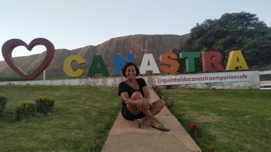
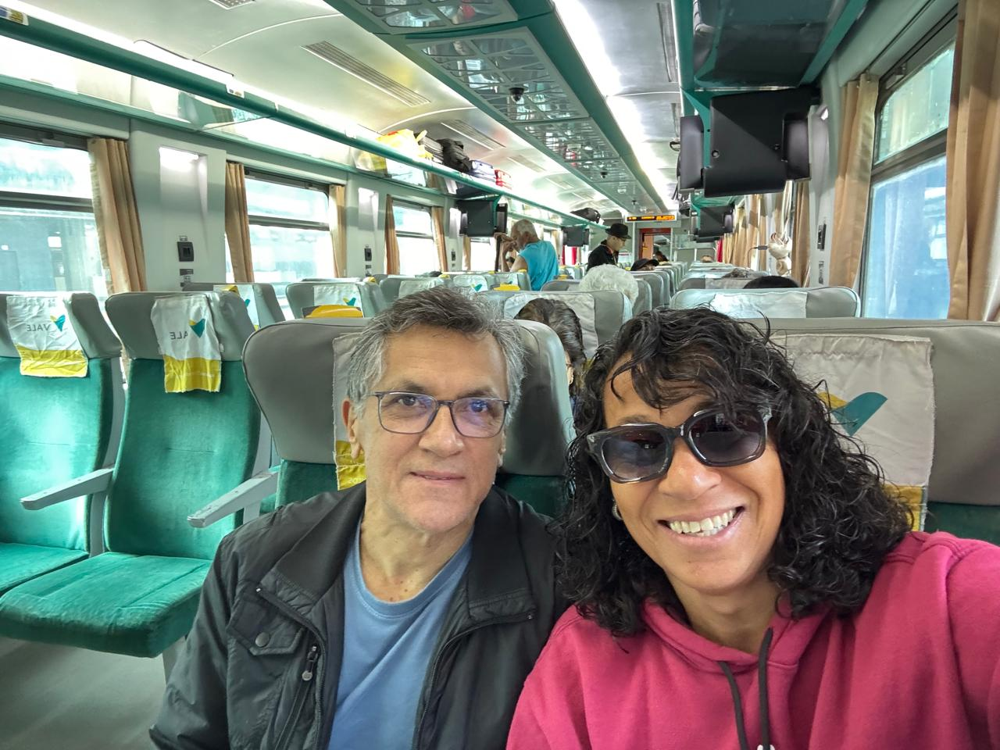

Belo Horizonte

08/11/2026
Pegamos um ônibus na Rodoviária do Tietê, em São Paulo, às 8h30, e fomos para Belo Horizonte. O objetivo dessa viagem era fazer o trajeto de trem de Belo Horizonte para Cariacica, no Espírito Santo. A chegada a BH estava prevista para as 17 horas, mas houve um acidente entre duas carretas já próximo à chegada, e ficamos parados por cerca de 2 horas. Mesmo com o pequeno atraso, chegamos bem.
Quando desembarcamos, fomos almoçar no Girafas da própria rodoviária. Depois, chamamos um carro de aplicativo que nos levou até o hotel que já havíamos reservado para pernoitar. No dia seguinte, 09/11/26, tomamos o café da manhã no hotel e saímos rumo à Estação Ferroviária para comprar as passagens de trem para Cariacica. A intenção era viajar no dia seguinte, 10/11/26, na classe executiva, mas só encontramos vagas para o dia 11/11/26 na classe econômica. Por falta de opção, compramos.
Aproveitamos para tirar algumas fotos na Praça da Estação quando começou a chover. Teresa comprou um guarda-chuva e, como tínhamos que fazer o checkout no hotel até o meio-dia (pois havíamos reservado apenas uma diária), encontramos outro hotel. Como já sabíamos a data exata da viagem para Cariacica, reservamos duas diárias. Retornamos ao primeiro hotel para pegar as bagagens, enquanto a chuva não dava trégua.
10/11/26
Levantamos cedo, tomamos o café da manhã às 7 horas, saímos e andamos quase o dia todo pela cidade. Passamos pelo Parque Municipal e pelo Mosteiro São José, atravessamos a Ponte Santa Teresa sobre a linha de trem, fizemos a volta pelo outro lado e acessamos a estação de metrô (Supermercados BH).
Seguimos até a Estação São Gabriel, dirigimo-nos ao terminal de ônibus, pegamos a linha 8551 até a Estação UFMG, depois pegamos o ônibus 51 e fomos para a Estação Pampulha (MOVE). Ao desembarcar, andamos até a Lagoa da Pampulha, onde alugamos uma bicicleta elétrica cada um e demos a volta em torno da lagoa — cerca de 20 km —, parando para tirar algumas fotos.
Depois, retornamos à estação, pegamos o ônibus 50 até a Estação Rio de Janeiro (no centro, próximo de onde estávamos hospedados), seguimos até a rodoviária e fomos almoçar no Girafas novamente. Em seguida, nos dirigimos ao Mercado Central, compramos queijos, doces e souvenirs, retornando ao hotel por volta das 17 horas.
Capitólio
21/04/2023
Sempre ouvia falar sobre Capitólio, mas só depois do acidente ocorrido em 8 de janeiro de 2022, quando um paredão de pedra de um cânion desmoronou no Lago de Furnas, causando a morte de dez pessoas, todas ocupantes de uma mesma lancha. Outras 27 pessoas ficaram feridas. O bloco de pedra atingiu três embarcações que transportavam turistas para conhecer a região. Veja a notícia no Jornal Nacional. Muito lamentável o que aconteceu, mas fiquei curiosa para conhecer. É realmente um lugar espetacular. Além dos passeios de lancha pelo Lago de Furnas, fizemos vários outros passeios pela região.
Serra da Canastra
Saímos cedo de Capitólio com destino à Serra da Canastra, uma distância de aproximadamente 130 km. Ao chegar, seguimos em direção à parte alta, uma das rotas turísticas mais procuradas. Sem nos dar conta e sem conhecer o percurso, pensamos 'vamos indo até onde der'. Já estávamos bem longe quando percebemos que estava num trecho que não dava mais para voltar. A estrada era bem estreita, esburacada e íngreme. De repente, o carro ficou preso num buraco, nem ia para frente, nem para trás. Foi um sufoco: de um lado, o paredão rochoso; do outro, um abismo de arrepiar. No meio de uma curva acentuada, saímos do carro para avaliar a situação. Colocamos algumas pedras no buraco, mas não adiantou. Tereza ficou fora para me orientar e fui tentar uma ré bem curta por conta do perigo de cair no abismo. Consegui voltar alguns centímetros e travei o carro. Desci novamente para calçar o pneu com pedras. A Tereza se afastou bastante e voltei para o carro determinado a sair dali. Acelerei forte, o carro deu um solavanco e finalmente saiu. Que aventura! Só aí nos demos conta de que aquele trajeto só deveria ser feito com carro com tração nas 4 rodas. Apesar do susto, valeu muito a pena, pois pudemos apreciar paisagens deslumbrantes, a nascente do Rio São Francisco, o curral de pedras e a incrível queda d'água que forma uma das maiores cachoeiras do Brasil, a Casca d'Anta.
Poços de Caldas
Um Bate e Volta até Poços de Caldas
Em dezembro de 2023, enquanto estávamos viajando por São José do Rio Pardo, tiramos um dia para visitar Poços de Caldas. A distância entre as duas cidades é de aproximadamente 63 km.
Chegamos cedo e, antes mesmo de iniciarem as atividades do teleférico, já estávamos na fila para visitar o Parque do Cristo, de onde se tem uma visão maravilhosa da cidade. A subida até o Cristo Redentor pode ser feita tanto pelo teleférico quanto por uma trilha que corta a encosta. Do teleférico, é possível observar, logo embaixo, as pessoas caminhando pela trilha, além de contemplar toda a cidade e as montanhas ao redor.
Natureza e Pontos Turísticos
Depois desse passeio, fomos para o Parque da Cascata das Antas, onde visitamos uma antiga usina hidrelétrica e a cachoeira que dá nome ao local. Na volta, ainda passamos para conhecer a Fonte Luminosa e o famoso Relógio Floral.
Já no final da tarde, pegamos a estrada e retornamos para São José do Rio Pardo.